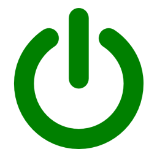

<nav class="navbar navbar-expand-sm"
     [class.menu-transparent]="isBackgroundEnabled"
     [class.shadow]="!isBackgroundEnabled" [class.menu]="!isBackgroundEnabled">
  <a class="navbar-brand" routerLink="/accueil">
    
  </a>
  <div *ngIf="!(route.url.includes('acceuil') || route.url.includes('upload'))">
    <button routerLink="/upload" pButton type="button" label="+ Nouvelle annonce" class="ui-button-rounded ui-button-secondary"></button>
  </div>
  <div *ngIf="!route.url.includes('acceuil')">
    <button routerLink="/" pButton type="button" icon="pi pi-search" label="Rechercher" class="ui-button-rounded ui-button-secondary"></button>
  </div>
  <div class="ml-auto mr-1" *ngIf="localStorageEmpty()">
    <button routerLink="inscription" pButton type="button" label="Inscription" class="ui-button-rounded ui-button-secondary"></button>
    <button type="button" (click)="showModalDialog()" pButton label="Connexion" class="ui-button-rounded ui-button-secondary"></button>

    <p-dialog [(visible)]="displayModal" [modal]="true" [style]="{width: '40vw'}" [baseZIndex]="10000"
    [draggable]="false" [resizable]="false" class="modal_box">

      <p-header class="modal_header">Connexion</p-header>

      <app-connexion></app-connexion>

    </p-dialog>
  </div>

  <div class="ml-auto mr-1 thisdiv" *ngIf="!localStorageEmpty()">
    <p-tieredMenu #menu [model]="items" [popup]="true" ></p-tieredMenu>
    <button #btn type="button" pButton icon="pi pi-fw pi-list" label=" Espace personnel" (click)="menu.toggle($event)"
            class="userMenu" [ngStyle]="{'background-image': getAvatar()}">

    </button>
    
  </div>

</nav>
